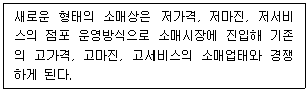
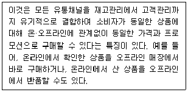
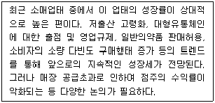
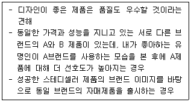
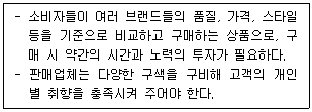

유통관리사-3급 (2022-05-14 기출문제)
1과목: 유통상식
1. 서비스 유통경로가 소비재나 산업재 유통경로에 비해 단순한 것은 서비스의 독특한 특성에 기인한다고 할 수 있는데 이러한 서비스의 독특한 특성으로 옳지 않은 것은?
- 무형성
- 소멸성
- 비분리성
- 이질성
- 유형성
(정답률: 알수없음)

2. 환경문제에 대한 사회적 욕구에 부응하기 위한 유통업체들의 활동으로 가장 옳지 않은 것은?
- 안전한 유통폐기물처리
- 환경친화형 상품조달
- 소음 등 환경문제를 고려한 유통시스템 구축
- 포장 간소화
- 고령자를 배려한 개별점포의 시설 확충
(정답률: 알수없음)
3. 유통경로의 필요성을 설명하는 원리로서 가장 옳지 않은 것은?
- 고정비 우위의 원리
- 총거래수 최소의 원리
- 집중저장의 원리
- 분업의 원리
- 변동비 우위의 원리
(정답률: 알수없음)
4. 판매원이 고객가치 증진을 위한 브레인스토밍(brainstorming)을 실시할 경우 고려해야 할 기본원칙으로 가장 옳지 않은 것은?
- 아이디어의 양을 중시한다.
- 자유 분방한 분위기를 조성한다.
- 아이디어의 결합과 개선을 요구한다.
- 의견에 대하여 일체 비판하지 않는다.
- 개인 의견이나 창의가 전혀 수정·개량되지 않도록 한다.
(정답률: 알수없음)
5. 중간상은 제조업체와 소비자 사이에 위치하면서 다양한 문제를 해소해 주는데 이에 대한 내용으로 가장 옳지 않은 것은?
- 상품구색상의 불일치 해소
- 생산단위와 구매단위 불일치 해소
- 생산시점과 소비시점 불일치 해소
- 장소적 불일치 해소
- 경로 구성원 간의 수직적 갈등 해소
(정답률: 알수없음)
6. 판매원이 갖추어야 할 지식 중 시장 지식에 관한 것만을 나열한 것으로 옳은 것은?
- 고객에 대한 이해, 상권에 대한 이해
- 업무관련 내용, 회사 관련 내용
- 제품의 가격과 할인 조건
- 회사의 창립시기와 조직 구성
- 상표명의 의미
(정답률: 알수없음)
7. 아래 글상자에서 설명하는 소매업태의 변천과정과 관련된 이론으로 가장 옳은 것은?

- 소매수명주기
- 소매업 수레바퀴가설
- 소매아코디언 이론
- 대리이론
- 거래비용이론
(정답률: 알수없음)
8. 의약품이나 화장품 등을 취급하는 복합점포로서, 건강 및 미용과 관련된 제품들을 주로 판매하기 때문에 H&BC(Health & Beauty Care) shop이라고 부르기도 하는 소매업태로 가장 옳은 것은?
- 양판점(general merchandising store)
- 회원제 도매클럽(membership wholesale club)
- 드럭 스토어(drug store)
- 할인점(discount store)
- 슈퍼마켓(supermarket)
(정답률: 알수없음)
9. 우리나라 소매유통의 최신 트렌드로 옳지 않은 것은?
- 간편식 매출 증가
- 1인가구 증가로 인한 소량구매 확산
- 명동, 종로 등 전통상권의 지위 강화
- 구독경제 비즈니스의 확대
- 메타버스 등 새로운 정보기술과의 결합
(정답률: 알수없음)
10. 유통산업의 성장배경으로 가장 거리가 먼 것은?
- 가격경쟁의 심화
- 정보기술의 발전
- 제품의 표준화
- 유통업체의 대형화
- 유통산업 양극화 정책
(정답률: 알수없음)
11. 양성평등과 관련된 설명 중 가장 옳지 않은 것은?
- 모든 인간은 고정된 성 역할이나 성별 고정관념에 구속됨 없이 자유롭게 자신의 능력을 개발하고 선택할 수 있는 권리를 가진다.
- 양성평등의 개념은 성인지-양성평등-남녀평등 순으로 변화해 왔다.
- 기존의 성정체성 기반의 성역할 구분은 개인의 능력개발을 저해하는 요인이다.
- 여성과 남성은 헌법이 보장하는 평등한 권리를 가지고 태어난 존엄한 존재이다.
- 성별에 대한 차별없이 사회, 문화적 발달에 기여하고 혜택을 공평하게 누려야 한다.
(정답률: 알수없음)
12. 서비스의 품질속성 중 판매원의 복장과 관련성이 높은 개념으로 가장 옳은 것은?
- 공감성
- 확신성
- 유형성
- 반응성
- 신뢰성
(정답률: 알수없음)
13. 직업인이 갖추어야 할 바람직한 직업윤리에 대한 설명으로 가장 옳지 않은 것은?
- 직업을 통해 다른 사람에게 봉사하는 마음을 가지고 실천하는 봉사의식
- 자신의 직업이 타인을 위해 중요한 일을 하고 있다고 생각하는 직분의식
- 자신의 직업에 충실하게 최선을 다하는 책임의식
- 자신이 하고 있는 일이 다른 사람에 비해 우월한 지위에 있다고 여기는 선민의식
- 직업에 필요한 지식과 교육을 바탕으로 수행해내는 전문가 의식
(정답률: 알수없음)
14. 소매업의 특징에 대한 설명으로 가장 옳지 않은 것은?
- 유통에 있어서 최종소비자와의 접점에 있다.
- 단순히 제품을 판매하는 것만을 의미하는 것이 아니고, 다양한 서비스 판매활동도 포함한다.
- 상품과 서비스에 필요한 가치를 부가하여 최종소비자에게 판매하는 비즈니스 활동이다.
- 사업고객과 주로 거래하기 때문에 입지, 촉진, 점포분위기는 상대적으로 덜 중요하다.
- 최종소비자들의 다양한 욕구를 충족시키기 위해 여러 형태로 진화·발전하여 왔다.
(정답률: 알수없음)
15. 아래 글상자에서 설명하는 개념으로 가장 옳은 것은?

- 싱글채널(single channel)
- 듀얼채널(dual channel)
- 크로스채널(cross channel)
- 멀티채널(multi channel)
- 옴니채널(omni channel)
(정답률: 알수없음)
16. 소매업체를 대신해서 공급자가 소매업의 재고관리를 수행하는 공급망관리를 의미하는 용어로 가장 옳은 것은?
- SCM(Supply Chain Management)
- CR(Continuous Replenishment)
- VMI(Vendor Managed Inventory)
- ECR(Efficient Consumer Response)
- EDI(Electronic Data Interchange)
(정답률: 알수없음)
17. 아래 글상자에서 설명하는 소매업태로 가장 옳은 것은?

- 백화점
- 온라인 쇼핑몰
- 대형마트
- 편의점
- TV홈쇼핑
(정답률: 알수없음)
18. 매장 내에서 판매원이 지녀야 할 마음가짐으로 가장 옳지 않은 것은?
- 고객의 입장에서 배려하는 마음을 가진다.
- 고객을 감동시키기 위해 고객정보를 조사한다.
- 효과적인 커뮤니케이터(communicator)가 되어야 한다.
- 고객이 원할 때 상세하고 친절히 설명해주어야 한다.
- 고객이 만족할 수 있도록 상품 및 서비스를 준비한다.
(정답률: 알수없음)
19. “소비자기본법”(시행 2021.12.30., 법률 제17799호, 2020.12.29., 타법개정)에서 규정한 사업자의 책무에 해당하지 않는 것은?
- 사업자는 물품등으로 인하여 소비자에게 생명ㆍ신체 또는 재산에 대한 위해가 발생하지 아니하도록 필요한 조치를 강구하여야 한다.
- 사업자는 물품등을 공급함에 있어서 소비자의 합리적인 선택이나 이익을 침해할 우려가 있는 거래조건이나 거래방법을 사용하여서는 아니 된다.
- 사업자는 안전하고 쾌적한 소비생활 환경을 조성하기 위하여 물품등을 제공함에 있어서 환경친화적인 기술의 개발과 자원의 재활용 대책을 마련해야 한다.
- 사업자는 소비자의 개인정보가 분실ㆍ도난ㆍ누출ㆍ변조 또는 훼손되지 아니하도록 그 개인정보를 성실하게 취급하여야 한다.
- 사업자는 물품등의 하자로 인한 소비자의 불만이나 피해를 해결하거나 보상하여야 하며, 채무불이행 등으로 인한 소비자의 손해를 배상하여야 한다.
(정답률: 알수없음)
20. 업태에 대한 설명으로 가장 옳지 않은 것은?
- 업태는 상품의 영업방법을 중심으로 한 분류이다.
- 업태는 소비자를 중심으로 한 발상이다.
- 업태는 판매방법, 경영방법의 차이에 의한 분류이다.
- 업태는 소비자 라이프스타일의 변화에 대응한 판매방법의 유형에 의한 분류이다.
- 업태는 무엇을 파는가를 중심으로 한 상품특성에 의한 분류이다.
(정답률: 알수없음)
2과목: 판매 및 고객관리
21. 아래 글상자에 대한 설명으로 가장 알맞은 것은?

- 후광 효과(Halo effect)
- 파노플리 효과(Panoplie effect)
- 밴드왜건 효과(Band Wagon effect)
- 언더독 효과(Underdog effect)
- 스놉 효과(Snob effect)
(정답률: 알수없음)
22. 제품믹스는 넓이(width), 길이(length), 깊이(depth)로 결정되는데 다음 중 넓이(width)를 결정하는 것으로 가장 옳은 것은?
- 유통경로의 길이
- 유통경로의 다양성
- 제품믹스의 길이
- 제품의 계열(라인) 수
- 제품의 품목 수
(정답률: 알수없음)
23. 상품의 안전한 취급과 배송을 위한 배송 라벨표시 방법에 대한 설명으로 가장 옳지 않은 것은?
- 읽기 쉽고 두드러지게 보이는 색상을 선택해야 한다.
- 눈에 잘 띄는 사이즈로 부착해야 한다.
- 배송실패 최소화를 위해 수취인의 이름과 연락처, 주소 등의 개인정보가 노출되도록 해야 한다.
- 날씨의 영향을 받지 않도록 견고히 부착되어야 한다.
- 빠르게 읽고, 쉽게 이해할 수 있어야 한다.
(정답률: 알수없음)
24. 점포의 혼잡성이 소비자에게 미치는 영향에 대한 설명으로 가장 옳지 않은 것은?
- 혼잡성은 소비자가 인식하고 처리할 수 있는 정보의 양을 제한한다.
- 대부분의 소비자는 혼잡한 상황에서 바빠 보이는 직원에게 물어보고 상담하기를 꺼린다.
- 혼잡한 상황에서 소비자는 구매를 연기하기 보다 충동구매를 한다.
- 혼잡한 상황에서의 구매경험에 대한 고객만족도는 대부분 낮다.
- 혼잡성을 경험한 소비자는 그 점포에 대해 나쁜 이미지를 갖게 될 가능성이 크다.
(정답률: 알수없음)
25. 고객을 칭찬할 경우 사용할 수 있는 화법으로 가장 옳지 않은 것은?
- 마음속에서 우러나오는 감동을 가지고 칭찬한다.
- 고객이 알아채지 못한 곳을 발견하여 칭찬하는 것이 효과적이다.
- 지나친 칭찬은 아부처럼 들리기 쉬워 역효과를 가져올 수도 있으니 주의한다.
- 구체적인 칭찬보다는 추상적인 칭찬이 효과적이다.
- 고객의 선택에 대해 찬사와 지지를 보낸다.
(정답률: 알수없음)
26. 조명(lighting)은 점포환경관리의 주요 수단의 하나이다. 조명의 용도로서 가장 옳지 않은 것은?
- 상품의 사용정보를 제공한다.
- 상품에 어울리는 공간 구성과 분위기를 연출한다.
- 점포 내부공간의 단점을 보완하기도 한다.
- 특정 상품에 고객 관심을 집중시킨다.
- 무드 조성을 통해 점포이미지를 개선한다.
(정답률: 알수없음)
27. 고객이 결정하기 힘들어할 경우 효과적으로 판매를 종결하기 위해 사용하는 일반적인 방법으로 두 가지 대안 중에서 한 가지를 선택하도록 하는 결정기법으로 옳은 것은?
- 타이밍지적법
- 보증법
- 실례법
- 가정적 종결법
- 요약 반복법
(정답률: 알수없음)
28. 제품을 효과적으로 판매하기 위해 시연하는 방법을 사용할 경우 주의할 사항에 대한 설명으로 가장 옳지 않은 것은?
- 일반적으로 너무 긴 시간을 시연에 할애하는 것은 바람직하지 못하다.
- 상품을 사전에 점검하여 완벽한 제품을 고객에게 제시한다.
- 시연은 고객이 직접 사용해보도록 하는 편이 효과적이다.
- 고객이 요청하는 상품은 마지막에 제시하는 것이 효과적이다.
- 너무 많은 상품을 제시하면 고객이 혼란스러울 수 있기에 2~3개 정도가 적당하다.
(정답률: 알수없음)
29. 판매원이 매장에서 지녀야 할 기본적인 태도와 관련된 설명으로 가장 옳지 않은 것은?
- 명찰은 고객이 알아볼 수 있도록 왼쪽 가슴 위에 단정하게 착용한다.
- 지나치게 화려한 액세서리 착용을 지양한다.
- 신발은 슬리퍼를 준비하여 편안하게 응대한다.
- 지나친 색조화장은 피하는 것이 좋다.
- 항상 용모를 단정하게 관리한다.
(정답률: 알수없음)
30. 아래 글상자에서 설명하는 상품의 분류로 가장 옳은 것은?

- 편의품
- 선매품
- 전문품
- 비탐색품
- 자본재
(정답률: 알수없음)
31. 소비자가 상품을 통해 다른 사람들에게 자신의 위치나 개성을 표현하면서 얻을 수 있는 편익을 의미하는 것으로 가장 옳은 것은?
- 기능적 편익
- 심리적 편익
- 감성적 편익
- 사회적 편익
- 정서적 편익
(정답률: 알수없음)
32. 브랜드의 계층구조 중 구형브랜드와 구분해주거나, 품질이 개선된 것을 나타내기 위해서 사용하는 것으로 옳은 것은?
- 서비스 마크(service mark)
- 기업 브랜드(corporate brand)
- 패밀리 브랜드(family brand)
- 개별 브랜드(individual brand)
- 브랜드 수식어(brand modifier)
(정답률: 알수없음)
33. 서비스 품질 평가요소 중 판매원의 능력, 지식, 예의 등을 통해 고객이 느끼는 서비스 품질에 대한 믿음과 관련된 것은?
- 신뢰성(reliability)
- 확신성(assurance)
- 유형성(tangibility)
- 반응성(responsiveness)
- 공감성(empathy)
(정답률: 알수없음)
34. 구매시점(point-of-purchase)광고에 대한 설명으로 가장 옳지 않은 것은?
- 소비자들의 구매유도를 위해 눈에 잘 띄게 설치해야 한다.
- 소비자들에게 주로 경제적인 인센티브를 제공하는 판촉수단이다.
- 소비자가 상품을 구입하는 최종지점에서의 광고이다.
- 상품의 실물대, 포스터, 알림보드 등의 광고물들을 말한다.
- 구매시점광고는 소비자의 관심과 구매 행동에 긍정적인 영향을 미칠 수 있다.
(정답률: 알수없음)
35. 점포선택에 영향을 주는 점포속성변수에 대한 설명으로 가장 옳지 않은 것은?
- 의복을 구매할 때와 가전제품을 구매할 때 소비자들이 고려하는 점포속성변수는 달라진다.
- 고관여 제품을 구매하는 경우 점포선택에 대한 의사결정을 심사숙고할 가능성이 높다.
- 점포이미지 같은 점포속성변수는 점포선택 뿐만 아니라 상품선택과 브랜드선택에도 영향을 미친다.
- 소매점은 광고나 촉진활동 같은 소매믹스변수로 소비자의 점포 선택에 영향을 미칠 수 있다.
- 소비자들의 점포선택에 영향을 주는 점포속성변수로는 인구규모 및 가구수 그리고 세대 비율이 대표적이다.
(정답률: 알수없음)
36. 소매업체가 고객의 입점유도와 궁극적인 매출증대를 위해 원가나 일반 판매가보다 훨씬 싸게 책정한 상품을 의미하는 것으로 가장 옳은 것은?
- 단수가격상품(odd pricing products)
- 묶음상품(bundling products)
- 유통업체브랜드(private brands)
- 미끼상품(loss leaders)
- 제조업체브랜드(national brands)
(정답률: 알수없음)
37. 서비스관리를 위한 7가지 요소(7P)로 가장 옳지 않은 것은?
- 장소(place)
- 예측(prediction)
- 사람(people)
- 물리적환경(physical evidence)
- 과정(process)
(정답률: 알수없음)
38. 동일한 고객에게 연속적으로 수익성이 더 높은 제품 및 서비스를 판매하는 것을 의미하는 것으로 가장 옳은 것은?
- 버즈마케팅(buzz marketing)
- 크로스셀링(cross-selling)
- 업셀링(up-selling)
- 바이럴마케팅(viral marketing)
- 보상판매(trade-in)
(정답률: 알수없음)
39. 고객이 불만을 제기할 경우의 응대방법으로 가장 옳지 않은 것은?
- 고객이 제기하는 불만내용을 적극적으로 경청한다.
- 고객과의 논쟁이나 변명은 피하고 고객의 입장에서 성의 있는 자세로 응대한다.
- 고객이 지나친 언어사용과 행동을 취할지라도 차분하고 이성적인 자세로 응대한다.
- 신속하게 불만사항을 처리하고 재발 방지책을 강구한다.
- 고객의 요구사항 속에 숨겨져 있는 욕구를 끄집어내기 위해 고객이 제기하는 불만에 대해 계속 질문한다.
(정답률: 알수없음)
40. 구매활동을 통해 구매액이 누적됨에 따라 포인트를 제공하여 재구매를 장려하고 보상하는 판매촉진도구를 의미하는 것으로 가장 옳은 것은?
- 사은품
- 할인판매
- 경품
- 쿠폰
- 로열티 프로그램
(정답률: 알수없음)
41. 매장 레이아웃 구성의 목적으로 가장 옳지 않은 것은?
- 구매편의 및 구매환경의 향상
- 고객의 쇼핑시간 단축효과 향상
- 매출액 및 수익률의 향상
- 매장 공간의 효율성 향상
- 직원들의 작업능률 향상
(정답률: 알수없음)
42. 점포의 후방공간에 대한 설명으로 가장 옳지 않은 것은?
- 점포공간 중 매장 이외의 부분을 말한다.
- 작업장, 사무실, 휴게실 등의 공간을 말한다.
- 점포의 생산성과 가장 관련이 높은 공간이다.
- 영업형태, 취급상품 유형 등을 고려하여 후방공간의 비율을 결정한다.
- 판매상품의 후방공간 체류시간을 최소화 할 수 있도록 하는 레이아웃이 필요하다.
(정답률: 알수없음)
43. 푸시(push) 전략에 대한 설명으로 가장 옳지 않은 것은?
- 제조업자가 중간상들을 대상으로 하여 판매촉진활동을 수행하는 것을 말한다.
- 대체로 충분한 자원을 가지고 있지 못한 소규모 제조업체가 푸시전략에 의존한다.
- 판매원의 적극적인 판매 시도가 중요한 상품의 경우 푸시전략을 활용한다.
- 상품의 상표인지도와 애호도를 높이기 위해 광고를 푸시하는 방식을 활용한다.
- 가격할인, 수량할인, 인적판매, 협동광고, 점포판매원 훈련프로그램 등을 제공한다.
(정답률: 알수없음)
44. 구매에 영향을 미치는 준거집단에 대한 설명으로 가장 옳지 않은 것은?
- 신념, 느낌 그리고 행동에 있어 비교의 기준이 되는 집단을 의미한다.
- 가족은 구매결정에 영향을 미치는 준거집단에서 제외된다.
- 직접적인 대화뿐만 아니라 간접적인 관찰을 통해 의사결정에 대한 정보를 제공한다.
- 특정 구매행동에 대한 인정 및 칭찬 등의 보상을 통해 구매 행동을 강화한다.
- 개인의 취향이 아닌 준거집단에 동화되고 소속되기 위해 제품을 구매하기도 한다.
(정답률: 알수없음)
45. 고객응대 시 발생할 수 있는 컴플레인의 원인으로 가장 옳지 않은 것은?
- 판매사원의 대고객 서비스 인식부족
- 무성의한 접객태도와 상품에 대한 관리 소홀
- 매장상품에 대한 상품지식의 결핍
- 판매를 완료하고자하는 적극적인 판매자세
- 고객의 교환과 환불요구에 대한 미대응
(정답률: 알수없음)